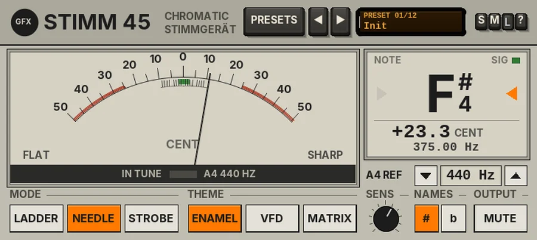

Stimm 45
A chromatic guitar and bass tuner with ladder, needle and strobe displays, adjustable A4 reference, silent-tuning mute and three faceplates.

Overview
Stimm 45 is a chromatic tuner for guitar, bass and any other pitched instrument, in the spirit of the 1980s and 90s Eastern Bloc laboratory test hardware: flat, sharp-cornered panels, thin framing lines and big, readable figures. It is the matched partner of the Pegel 45 meter.
Play a single note and it shows the note name with its octave (for example E 2), how far off it is to a tenth of a cent, and the frequency in Hz. You can read it three ways: an LED LADDER, a damped NEEDLE or a STROBE. It tracks from about 24 Hz to 1.4 kHz, so it covers a five-string bass's low B as well as the top of a guitar neck, and on a steady note it is accurate to well under a tenth of a cent.
The audio passes through untouched, bit for bit and with no latency, unless you switch MUTE on to tune in silence. There is no DRIFT and no output stage: a tuner should not colour the sound.
Reach for it for
- Tuning guitars and basses before a take, on the input track
- Silent tuning on stage or in the room with MUTE
- Checking the intonation of an instrument up the neck
- Tuning to other references: 415, 432, 442 or 443 Hz
- Checking the pitch of a sample, a drum or a synth patch
Controls
The header
- PRESETS
- Opens the preset list (or click the display).
- ◄ / ►
- Step through the presets.
- Preset display
- Shows the preset number and name. Click it for the list.
- S / M / L
- Panel size: small, medium or large. The panel also scales to fit the plugin window.
- ?
- Opens a pop-up with the design credit, the GFX website address and the address of this manual. Click anywhere to close it.
The display
The big window shows the error in the mode chosen with the MODE keys. FLAT is always on the left and SHARP on the right. After the note stops, the last reading stays for a moment, then the display rests.
- LADDER
- A centre-zero LED ladder. The centre lamp means in tune; blocks light to the left when flat and to the right when sharp, in 2-cent steps to 10 cents, then in 5-cent steps further out to 50 cents. They are green near the centre, amber further out and red at the ends. Below it a FINE row covers +/-10 cents in 1-cent cells, and the reading lights the two nearest cells in proportion, so you can tune finer than a cent.
- NEEDLE
- A heavy, damped needle on an arched -50 to +50 cent scale, with 1-cent ticks near the centre, a green in-tune band at +/-2 cents and red zones beyond 25 cents. The IN TUNE lamp on the pivot cover lights inside 2 cents; the A4 setting is printed beside it.
- STROBE
- Three bands of bars that scroll left when flat and right when sharp, faster the further out you are; the finer bands move two and four times faster. They stand still when the note is in tune, and the LOCK lamp lights inside 1 cent. This is the most precise view for fine tuning.
The readout
- NOTE
- The note name with its octave (E 2, C# 3 or Db 3); on the VFD and MATRIX faces it turns green when in tune. It reads - when there is nothing to read.
- Tune lamps
- A > on the left lights when the note is flat (tune up), a < on the right when it is sharp (tune down). Both light green when in tune (within 2 cents).
- SIG
- Lights when the input is loud enough for the tuner to read (see SENS).
- MUTED
- Replaces SIG while MUTE is on.
- CENT
- The error to a tenth of a cent.
- Hz
- The measured frequency.
- A4 REF
- The reference pitch, 400 - 480 Hz in 1 Hz steps (440 Hz by default). Use the down and up keys (hold one to repeat), or the mouse wheel over the value; double-click the value to return to 440 Hz.
The keys
- MODE: LADDER / NEEDLE / STROBE
- The display (NEEDLE by default).
- THEME: ENAMEL / VFD / MATRIX
- The faceplate: ENAMEL is bone-grey laboratory enamel (the default), VFD a dark gas-discharge display in turquoise, MATRIX a military-style LED matrix. The theme changes only the look.
- SENS
- Input sensitivity, 0 - 100% (60% by default): how loud the signal must be before the tuner reads. 0% needs about -24 dBFS, 100% reads signals down to about -80 dBFS. Turn it up for quiet or distant signals, down if noise or other instruments make the reading jump. Drag the knob, use the mouse wheel, or double-click for 60%. The caption shows the value while you touch it.
- NAMES: # / b
- Show the black notes as sharps (C#, the default) or flats (Db).
- OUTPUT: MUTE
- Silences the output with a short fade (no click) so you can tune in silence. The tuner keeps reading. Off by default.
Presets
Presets set the mode, theme, A4 reference, sensitivity and note names. Only Init also switches MUTE off.
- Init
- NEEDLE, ENAMEL, 440 Hz, SENS 60%, sharps.
- Guitar Strobe
- STROBE on the VFD face, 440 Hz.
- Bass Needle
- NEEDLE on the MATRIX face, SENS 72% for the softer low strings.
- Stage Ladder (VFD)
- LADDER on the VFD face, SENS 42% so stage noise does not trigger it.
- Studio Matrix
- LADDER on the MATRIX face, SENS 62%.
- Lab Strobe
- STROBE on the ENAMEL face.
- Quiet Room
- NEEDLE, SENS 88% for quiet acoustic instruments and distant microphones.
- Horn Section (flats)
- LADDER, with flat note names.
- Baroque 415
- STROBE at A4 = 415 Hz, flat names.
- Concert 442
- NEEDLE at A4 = 442 Hz.
- Orchestra 443
- NEEDLE on the VFD face at A4 = 443 Hz.
- Verdi 432
- LADDER on the MATRIX face at A4 = 432 Hz.
Tips
- Play one string at a time and let it ring: the reading settles within a fraction of a second and is steadiest on the sustain, not the attack.
- On bass, tune at the 12th-fret harmonic if the open string reads unsteadily.
- Put Stimm 45 first on the input track, before any amp or drive plug-in: a clean signal reads best.
- Use STROBE for the final touch: tune until the bars stand still.
- Leave MUTE on between takes on stage, and switch it off before you play.
File: gfx-stimm-45.jsfx